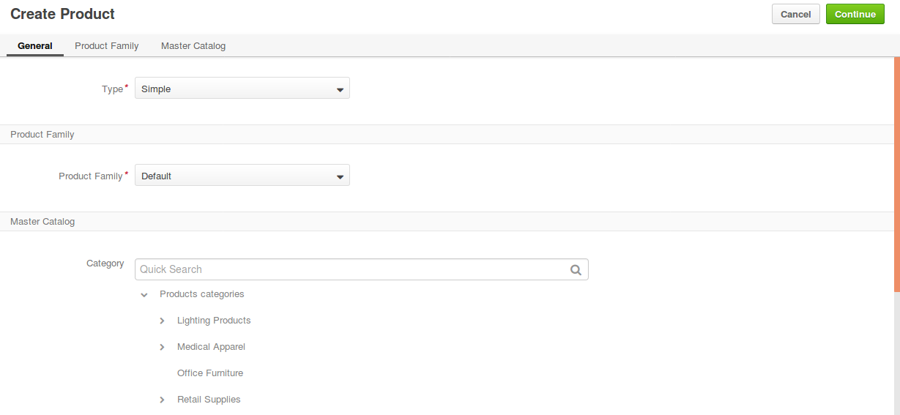
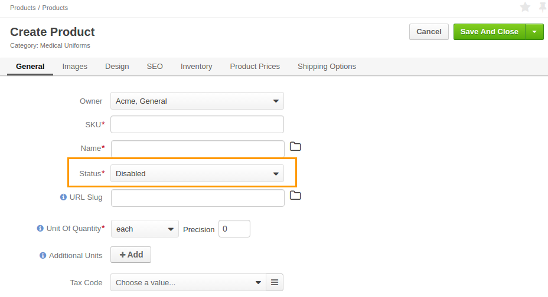
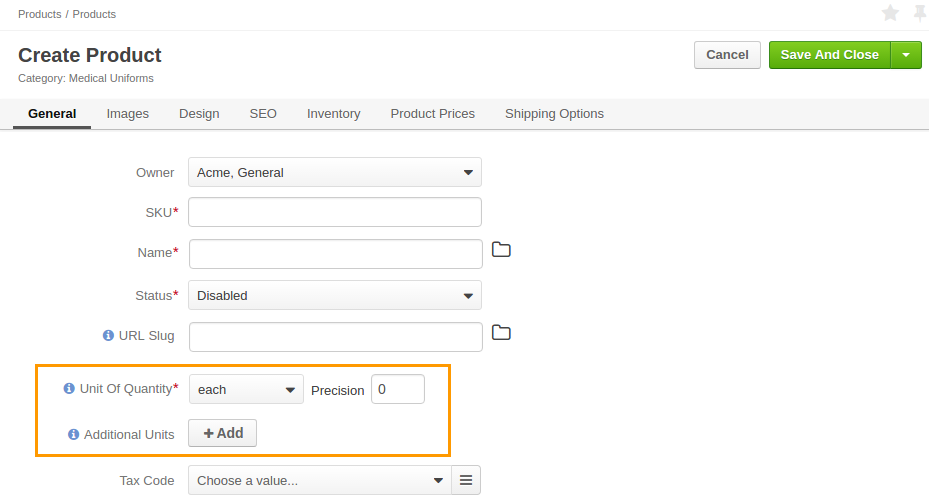
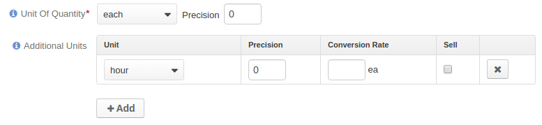
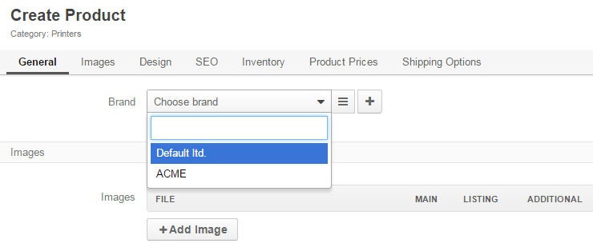
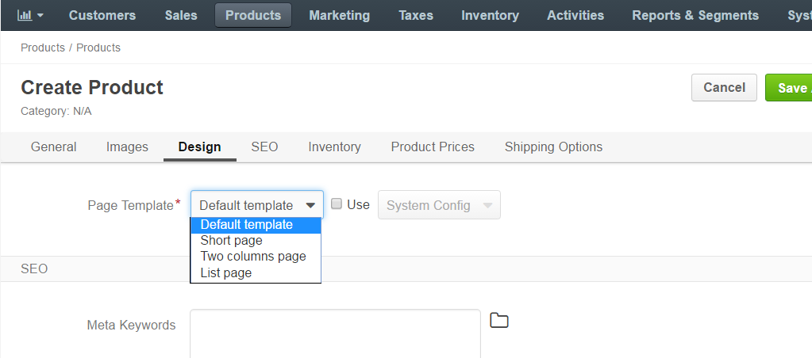
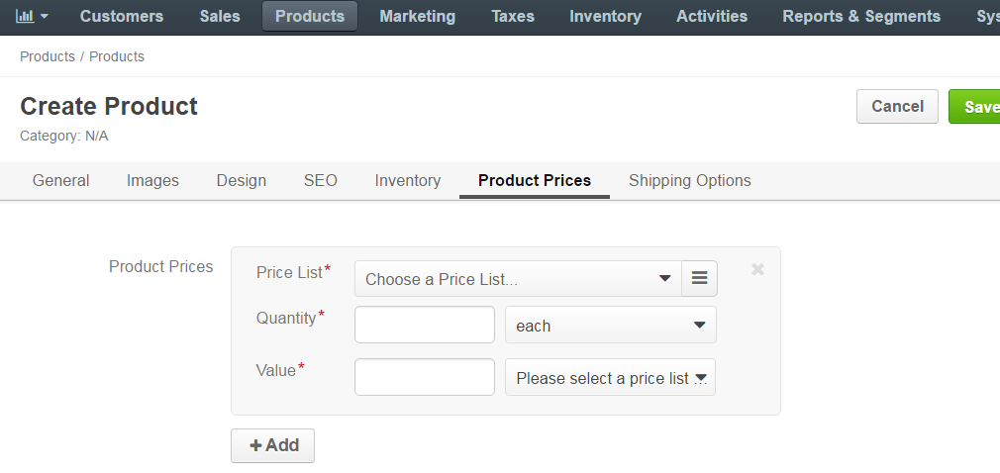
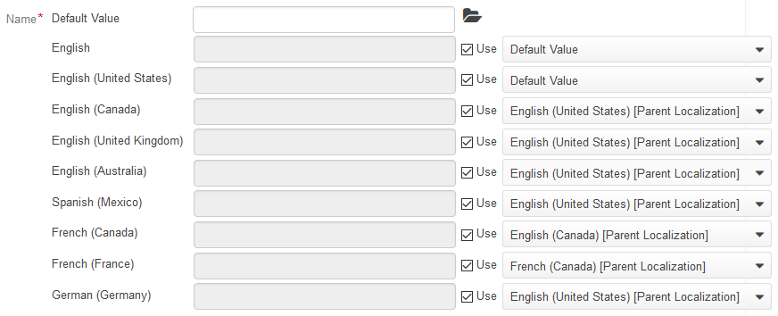

See a short demo on how to create a simple product, or keep reading the step-by-step guidance below.
To add a new simple product and make it available in the master catalog (for internal product management) and for purchase in the front store:
Navigate to Products > Products in the main menu.
Click Create Product.
Select the Simple product type.
Note
The product type selected in the fist step of product creation determines the way product information is used and managed in OroCommerce.
A product of a simple type is an ordinary product. It has a unique SKU and the set of product details that may vary based on
the product family that a product belongs to. You can manage the inventory information and the price for a simple product.
Select the product family to define the product options and details that will be filled in the following steps.
Place the product under the necessary category in the master catalog by clicking on the category. Use search to limit the list of categories.
Click Continue.
The product details page appears.
In the General section:
Enter the product SKU, name, description, and short description that best positions the product for your target audience.
Note
Use the WISIWIG editor to format the information.
Select the product status: Enabled or Disabled. When disabled, product is not included into the catalog and is considered to be a draft.
Enter a URL slug that is used to build a human-readable URL for the product page on the front store.
Configure units of quantity:
In the Unit Of Quantity list, select the main product unit that is shown by default when you view the product details in the front store. Available options: each, item, kilogram, piece, set.
In the Precision field, set the acceptable precision (number of digits after the decimal point) for the quantity that a user may order or add into the shopping list. Items and sets are usually whole numbers, and units like kilograms may get precision of 2 to allow buying a custom volume (e.g. 0.5 kg).
Click + Add to add more than one unit of quantity.
For every additional unit, provide precision and conversion rate compared to the main unit of quantity.
Select the Sell check box to enable selling product in these units. Unless Sell is selected, the unit is considered to be a draft.
You can delete the unnecessary unit of quantity by clicking the Delete icon next to it.
In the Tax Code list, select the product tax code that defines the percentage of tax that may be included into the purchase order during the checkout.
The tax calculation process depends on the tax jurisdiction that you decided to use in OroCommerce and other tax calculation options.
For Brand, select a brand from the list. Use to view the list of all available brands. To create a new brand, click +.
In the Image section, add a new image to the product by clicking +Add Image and uploading the necessary file. You can select whether the image will be shown as main (the image is used in the product details view), listing (the image is shown in the catalog listing), or additional (additional product pictures). All three categories can be selected at the same time. To remove an image, click the Delete icon next to it.
In the Design section, select the page template from the drop-down.
In the SEO section, provide the following information:
In the Inventory section, provide the following information:
| Field | Description |
|---|---|
| Inventory Status | This setting enables you to define and modify status information for the stock of the product. |
| Managed Inventory | This setting defines the method for inventory management.
|
| Highlight Low Inventory | This option defines if low inventory for products is displayed in the front store. |
| Inventory Threshold | A minimum quantity of the product that is treated as In stock. When a product quantity drops below this value, the product inventory status becomes Out Of Stock. |
| Low Inventory Threshold | The minimum stock level defined for the product. Reaching the defined level will trigger a warning message to the buyer in the front store. |
| Backorders | A flag that indicates whether OroCommerce accepts backorders. When set to Yes, buyers and sales people can order products in the quantities that are not currently available in the warehouses. The remaining portion of the order will be sustained until the product gets back in stock. |
| Decrement Inventory | A flag that indicates whether OroCommerce decrements inventory upon order.
|
| Minimum Quantity to Order | A minimum quantity that a buyer or sales person can claim in the RFQ, customer order, quote, or a shopping list. |
| Maximum Quantity to Order | A maximum quantity that a buyer or sales person can claim in the RFQ, customer order, quote, or a shopping list. |
| Is Upcoming | This option informs a customer that the product of the selected category is not in stock currently, but will be available later. When set to Yes, additional Availability Date displays. |
| Availability Date | The date which indicates the exact date and time since when the selected product will be available in stock. |
In the Product Price section, add fixed product prices. Note that fixed prices override the automatically generated price lists.
Click +Add, select a price list, specify quantity, units, price value and currency.
In the Shipping Options section, click +Add Options and provide unit, weight and weight measuring unit, dimensions (width, height, depth), and dimensions measuring unit and freight class.
Review translation rules for a product name, URL slug, description, and short description.
To enter translation manually, click , clear the Use <parent translation> check box next to the required language, and provide your version of the translation.
Click Save.